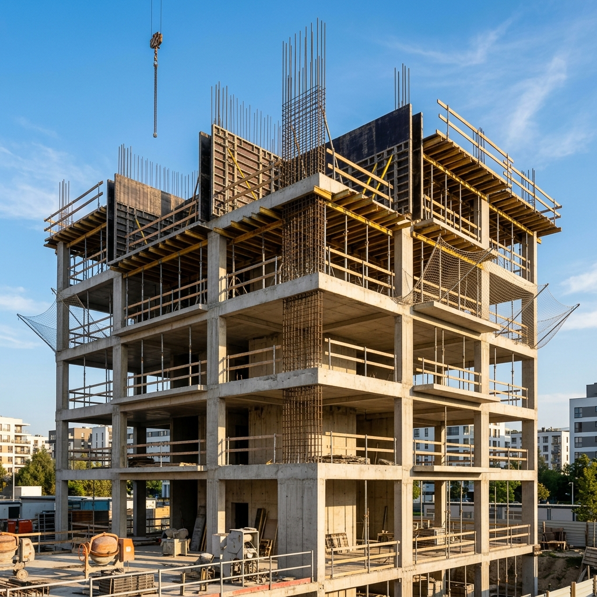
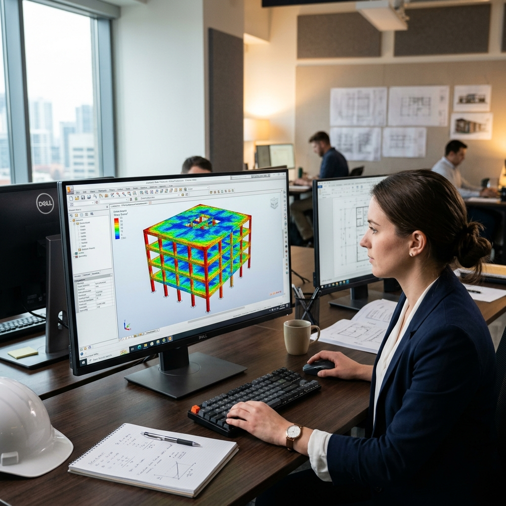
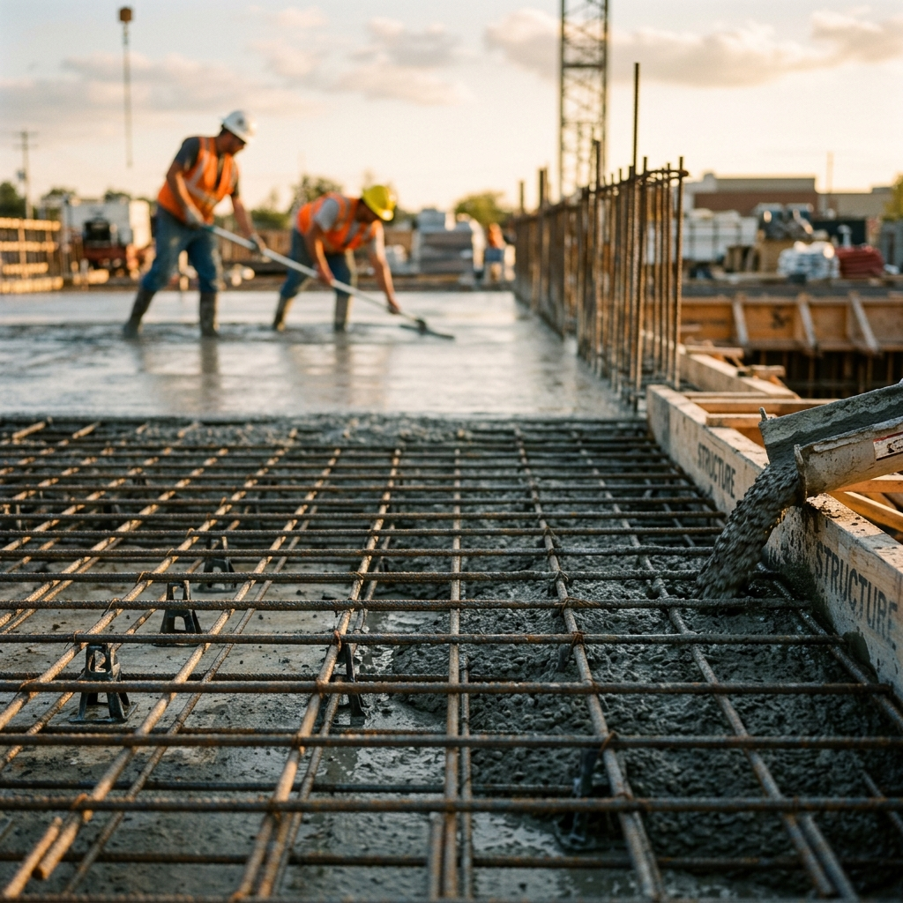

Cálculos de Estructura
Sismorresistentes
Planificamos la solidez de tu obra. Proyectos estructurales optimizados para ahorrar materiales y asegurar la aprobación municipal inmediata en Tucumán.
Menos Sobredimensionamiento, Más Seguridad
Ahorro Estructural Real
Calculamos la sección exacta de acero y hormigón, impidiendo el derroche de materiales típicos del cálculo informal.
Aprobación Legal Inmediata
Documentación firmada por ingenieros matriculados apta para la presentación técnica en municipios de Tucumán.
Rigidez Sísmica (Zona 2)
Esquemas de vigas de amarre y encadenado diseñados específicamente para las fuerzas dinámicas de nuestra región.

Sistemas Constructivos
Hormigón Armado (CIRSOC 201)
Cálculo integrado de bases, losas, vigas y columnas combinadas con armadura de acero. Es el estándar clásico para garantizar la solidez a compresión y tracción.

El Proceso
Análisis de Arquitectura
Estudio de planos de arquitectura para definir el sistema de fundaciones e integrar columnas sin alterar el diseño original.
Simulación Sísmica
Modelado computacional tridimensional simulando la respuesta del suelo frente a sismos dinámicos (Norma INPRES).
Optimización de Acero
Cálculo preciso del diámetro y cantidad de barras de hierro por elemento estructural, minimizando desperdicios y costos.
Entrega Ejecutiva
Generación de planos de encofrados, planillas de corte de hierro y memorias descriptivas aprobables por la municipalidad.
Preguntas Frecuentes
¿Listo para asegurar tu obra?
Construye con tranquilidad técnica. Pide presupuesto de cálculo bajo normas CIRSOC.